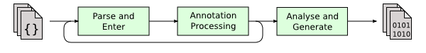

- 00 开篇词 为什么我们要学习Java虚拟机？.md.html
- 01 Java代码是怎么运行的？.md.html
- 02 Java的基本类型.md.html
- 03 Java虚拟机是如何加载Java类的.md.html
- 04 JVM是如何执行方法调用的？（上）.md.html
- 05 JVM是如何执行方法调用的？（下）.md.html
- 06 JVM是如何处理异常的？.md.html
- 07 JVM是如何实现反射的？.md.html
- 08 JVM是怎么实现invokedynamic的？（上）.md.html
- 09 JVM是怎么实现invokedynamic的？（下）.md.html
- 10 Java对象的内存布局.md.html
- 11 垃圾回收（上）.md.html
- 12 垃圾回收（下）.md.html
- 13 Java内存模型.md.html
- 14 Java虚拟机是怎么实现synchronized的？.md.html
- 15 Java语法糖与Java编译器.md.html
- 16 即时编译（上）.md.html
- 17 即时编译（下）.md.html
- 18 即时编译器的中间表达形式.md.html
- 19 Java字节码（基础篇）.md.html
- 20 方法内联（上）.md.html
- 21 方法内联（下）.md.html
- 22 HotSpot虚拟机的intrinsic.md.html
- 23 逃逸分析.md.html
- 24 字段访问相关优化.md.html
- 25 循环优化.md.html
- 26 向量化.md.html
- 27 注解处理器.md.html
- 28 基准测试框架JMH（上）.md.html
- 29 基准测试框架JMH（下）.md.html
- 30 Java虚拟机的监控及诊断工具（命令行篇）.md.html
- 31 Java虚拟机的监控及诊断工具（GUI篇）.md.html
- 32 JNI的运行机制.md.html
- 33 Java Agent与字节码注入.md.html
- 34 Graal：用Java编译Java.md.html
- 35 Truffle：语言实现框架.md.html
- 36 SubstrateVM：AOT编译框架.md.html
- 尾声丨道阻且长，努力加餐.html.md.html
- 工具篇 常用工具介绍.md.html
27 注解处理器
注解（annotation）是 Java 5 引入的，用来为类、方法、字段、参数等 Java 结构提供额外信息的机制。我先举个例子，比如，Java 核心类库中的@Override注解是被用来声明某个实例方法重写了父类的同名同参数类型的方法。
package java.lang;
@Target(ElementType.METHOD)
@Retention(RetentionPolicy.SOURCE)
public @interface Override {
}
@Override注解本身被另外两个元注解（即作用在注解上的注解）所标注。其中，@Target用来限定目标注解所能标注的 Java 结构，这里@Override便只能被用来标注方法。
@Retention则用来限定当前注解生命周期。注解共有三种不同的生命周期：SOURCE，CLASS或RUNTIME，分别表示注解只出现在源代码中，只出现在源代码和字节码中，以及出现在源代码、字节码和运行过程中。
这里@Override便只能出现在源代码中。一旦标注了@Override的方法所在的源代码被编译为字节码，该注解便会被擦除。
我们不难猜到，@Override仅对 Java 编译器有用。事实上，它会为 Java 编译器引入了一条新的编译规则，即如果所标注的方法不是 Java 语言中的重写方法，那么编译器会报错。而当编译完成时，它的使命也就结束了。
我们知道，Java 的注解机制允许开发人员自定义注解。这些自定义注解同样可以为 Java 编译器添加编译规则。不过，这种功能需要由开发人员提供，并且以插件的形式接入 Java 编译器中，这些插件我们称之为注解处理器（annotation processor）。
除了引入新的编译规则之外，注解处理器还可以用于修改已有的 Java 源文件（不推荐），或者生成新的 Java 源文件。下面，我将用几个案例来详细阐述注解处理器的这些功能，以及它背后的原理。
注解处理器的原理
在介绍注解处理器之前，我们先来了解一下 Java 编译器的工作流程。

如上图所示 出处 [1]，Java 源代码的编译过程可分为三个步骤：
- 将源文件解析为抽象语法树；
- 调用已注册的注解处理器；
- 生成字节码。
如果在第 2 步调用注解处理器过程中生成了新的源文件，那么编译器将重复第 1、2 步，解析并且处理新生成的源文件。每次重复我们称之为一轮（Round）。
也就是说，第一轮解析、处理的是输入至编译器中的已有源文件。如果注解处理器生成了新的源文件，则开始第二轮、第三轮，解析并且处理这些新生成的源文件。当注解处理器不再生成新的源文件，编译进入最后一轮，并最终进入生成字节码的第 3 步。
package foo;
import java.lang.annotation.*;
@Target({ ElementType.TYPE, ElementType.FIELD })
@Retention(RetentionPolicy.SOURCE)
public @interface CheckGetter {
}
在上面这段代码中，我定义了一个注解@CheckGetter。它既可以用来标注类，也可以用来标注字段。此外，它和@Override相同，其生命周期被限定在源代码中。
下面我们来实现一个处理@CheckGetter注解的处理器。它将遍历被标注的类中的实例字段，并检查有没有相应的getter方法。
public interface Processor {
void init(ProcessingEnvironment processingEnv);
Set<String> getSupportedAnnotationTypes();
SourceVersion getSupportedSourceVersion();
boolean process(Set<? extends TypeElement> annotations, RoundEnvironment roundEnv);
...
}
所有的注解处理器类都需要实现接口Processor。该接口主要有四个重要方法。其中，init方法用来存放注解处理器的初始化代码。之所以不用构造器，是因为在 Java 编译器中，注解处理器的实例是通过反射 API 生成的。也正是因为使用反射 API，每个注解处理器类都需要定义一个无参数构造器。
通常来说，当编写注解处理器时，我们不声明任何构造器，并依赖于 Java 编译器，为之插入一个无参数构造器。而具体的初始化代码，则放入init方法之中。
在剩下的三个方法中，getSupportedAnnotationTypes方法将返回注解处理器所支持的注解类型，这些注解类型只需用字符串形式表示即可。
getSupportedSourceVersion方法将返回该处理器所支持的 Java 版本，通常，这个版本需要与你的 Java 编译器版本保持一致；而process方法则是最为关键的注解处理方法。
JDK 提供了一个实现Processor接口的抽象类AbstractProcessor。该抽象类实现了init、getSupportedAnnotationTypes和getSupportedSourceVersion方法。
它的子类可以通过@SupportedAnnotationTypes和@SupportedSourceVersion注解来声明所支持的注解类型以及 Java 版本。
下面这段代码便是@CheckGetter注解处理器的实现。由于我使用了 Java 10 的编译器，因此将支持版本设置为SourceVersion.RELEASE_10。
package bar;
import java.util.Set;
import javax.annotation.processing.*;
import javax.lang.model.SourceVersion;
import javax.lang.model.element.*;
import javax.lang.model.util.ElementFilter;
import javax.tools.Diagnostic.Kind;
import foo.CheckGetter;
@SupportedAnnotationTypes("foo.CheckGetter")
@SupportedSourceVersion(SourceVersion.RELEASE_10)
public class CheckGetterProcessor extends AbstractProcessor {
@Override
public boolean process(Set<? extends TypeElement> annotations, RoundEnvironment roundEnv) {
// TODO: annotated ElementKind.FIELD
for (TypeElement annotatedClass : ElementFilter.typesIn(roundEnv.getElementsAnnotatedWith(CheckGetter.class))) {
for (VariableElement field : ElementFilter.fieldsIn(annotatedClass.getEnclosedElements())) {
if (!containsGetter(annotatedClass, field.getSimpleName().toString())) {
processingEnv.getMessager().printMessage(Kind.ERROR,
String.format("getter not found for '%s.%s'.", annotatedClass.getSimpleName(), field.getSimpleName()));
}
}
}
return true;
}
private static boolean containsGetter(TypeElement typeElement, String name) {
String getter = "get" + name.substring(0, 1).toUpperCase() + name.substring(1).toLowerCase();
for (ExecutableElement executableElement : ElementFilter.methodsIn(typeElement.getEnclosedElements())) {
if (!executableElement.getModifiers().contains(Modifier.STATIC)
&& executableElement.getSimpleName().toString().equals(getter)
&& executableElement.getParameters().isEmpty()) {
return true;
}
}
return false;
}
}
该注解处理器仅重写了process方法。这个方法将接收两个参数，分别代表该注解处理器所能处理的注解类型，以及囊括当前轮生成的抽象语法树的RoundEnvironment。
由于该处理器针对的注解仅有@CheckGetter一个，而且我们并不会读取注解中的值，因此第一个参数并不重要。在代码中，我直接使用了
`roundEnv.getElementsAnnotatedWith(CheckGetter.class)`
来获取所有被@CheckGetter注解的类（以及字段）。
process方法涉及各种不同类型的Element，分别指代 Java 程序中的各个结构。如TypeElement指代类或者接口，VariableElement指代字段、局部变量、enum 常量等，ExecutableElement指代方法或者构造器。
package foo; // PackageElement
class Foo { // TypeElement
int a; // VariableElement
static int b; // VariableElement
Foo () {} // ExecutableElement
void setA ( // ExecutableElement
int newA // VariableElement
) {}
}
这些结构之间也有从属关系，如上面这段代码所示 (出处 [2]）。我们可以通过TypeElement.getEnclosedElements方法，获得上面这段代码中Foo类的字段、构造器以及方法。
我们也可以通过ExecutableElement.getParameters方法，获得setA方法的参数。具体这些Element类都有哪些 API，你可以参考它们的 Javadoc[3]。
在将该注解处理器编译成 class 文件后，我们便可以将其注册为 Java 编译器的插件，并用来处理其他源代码。注册的方法主要有两种。第一种是直接使用 javac 命令的-processor参数，如下所示：
$ javac -cp /CLASSPATH/TO/CheckGetterProcessor -processor bar.CheckGetterProcessor Foo.java
error: Class 'Foo' is annotated as @CheckGetter, but field 'a' is without getter
1 error
第二种则是将注解处理器编译生成的 class 文件压缩入 jar 包中，并在 jar 包的配置文件中记录该注解处理器的包名及类名，即bar.CheckGetterProcessor。
（具体路径及配置文件名为`META-INF/services/javax.annotation.processing.Processor`）
当启动 Java 编译器时，它会寻找 classpath 路径上的 jar 包是否包含上述配置文件，并自动注册其中记录的注解处理器。
$ javac -cp /PATH/TO/CheckGetterProcessor.jar Foo.java
error: Class 'Foo' is annotated as @CheckGetter, but field 'a' is without getter
1 error
此外，我们还可以在 IDE 中配置注解处理器。这里我就不过多演示了，感兴趣的同学可以自行搜索。
利用注解处理器生成源代码
前面提到，注解处理器可以用来修改已有源代码或者生成源代码。
确切地说，注解处理器并不能真正地修改已有源代码。这里指的是修改由 Java 源代码生成的抽象语法树，在其中修改已有树节点或者插入新的树节点，从而使生成的字节码发生变化。
对抽象语法树的修改涉及了 Java 编译器的内部 API，这部分很可能随着版本变更而失效。因此，我并不推荐这种修改方式。
如果你感兴趣的话，可以参考 [Project Lombok][4]。这个项目自定义了一系列注解，并根据注解的内容来修改已有的源代码。例如它提供了@Getter和@Setter注解，能够为程序自动添加getter以及setter方法。有关对使用内部 API 的讨论，你可以参考 [这篇博客][5]，以及 [Lombok 的回应][6]。
用注解处理器来生成源代码则比较常用。我们以前介绍过的压力测试 jcstress，以及接下来即将介绍的 JMH 工具，都是依赖这种方式来生成测试代码的。
package foo;
import java.lang.annotation.*;
@Target(ElementType.METHOD)
@Retention(RetentionPolicy.SOURCE)
public @interface Adapt {
Class<?> value();
}
在上面这段代码中，我定义了一个注解@Adapt。这个注解将接收一个Class类型的参数value（如果注解类仅包含一个名为value的参数时，那么在使用注解时，我们可以省略value=），具体用法如这段代码所示。
// Bar.java
package test;
import java.util.function.IntBinaryOperator;
import foo.Adapt;
public class Bar {
@Adapt(IntBinaryOperator.class)
public static int add(int a, int b) {
return a + b;
}
}
接下来，我们来实现一个处理@Adapt注解的处理器。该处理器将生成一个新的源文件，实现参数value所指定的接口，并且调用至被该注解所标注的方法之中。
package bar;
import java.io.*;
import java.util.Set;
import javax.annotation.processing.*;
import javax.lang.model.SourceVersion;
import javax.lang.model.element.*;
import javax.lang.model.type.TypeMirror;
import javax.lang.model.util.ElementFilter;
import javax.tools.JavaFileObject;
import javax.tools.Diagnostic.Kind;
@SupportedAnnotationTypes("foo.Adapt")
@SupportedSourceVersion(SourceVersion.RELEASE_10)
public class AdaptProcessor extends AbstractProcessor {
@Override
public boolean process(Set<? extends TypeElement> annotations, RoundEnvironment roundEnv) {
for (TypeElement annotation : annotations) {
if (!"foo.Adapt".equals(annotation.getQualifiedName().toString())) {
continue;
}
ExecutableElement targetAsKey = getExecutable(annotation, "value");
for (ExecutableElement annotatedMethod : ElementFilter.methodsIn(roundEnv.getElementsAnnotatedWith(annotation))) {
if (!annotatedMethod.getModifiers().contains(Modifier.PUBLIC)) {
processingEnv.getMessager().printMessage(Kind.ERROR, "@Adapt on non-public method");
continue;
}
if (!annotatedMethod.getModifiers().contains(Modifier.STATIC)) {
// TODO support non-static methods
continue;
}
TypeElement targetInterface = getAnnotationValueAsTypeElement(annotatedMethod, annotation, targetAsKey);
if (targetInterface.getKind() != ElementKind.INTERFACE) {
processingEnv.getMessager().printMessage(Kind.ERROR, "@Adapt with non-interface input");
continue;
}
TypeElement enclosingType = getTopLevelEnclosingType(annotatedMethod);
createAdapter(enclosingType, annotatedMethod, targetInterface);
}
}
return true;
}
private void createAdapter(TypeElement enclosingClass, ExecutableElement annotatedMethod,
TypeElement targetInterface) {
PackageElement packageElement = (PackageElement) enclosingClass.getEnclosingElement();
String packageName = packageElement.getQualifiedName().toString();
String className = enclosingClass.getSimpleName().toString();
String methodName = annotatedMethod.getSimpleName().toString();
String adapterName = className + "_" + methodName + "Adapter";
ExecutableElement overriddenMethod = getFirstNonDefaultExecutable(targetInterface);
try {
Filer filer = processingEnv.getFiler();
JavaFileObject sourceFile = filer.createSourceFile(packageName + "." + adapterName, new Element[0]);
try (PrintWriter out = new PrintWriter(sourceFile.openWriter())) {
out.println("package " + packageName + ";");
out.println("import " + targetInterface.getQualifiedName() + ";");
out.println();
out.println("public class " + adapterName + " implements " + targetInterface.getSimpleName() + " {");
out.println(" @Override");
out.println(" public " + overriddenMethod.getReturnType() + " " + overriddenMethod.getSimpleName()
+ formatParameter(overriddenMethod, true) + " {");
out.println(" return " + className + "." + methodName + formatParameter(overriddenMethod, false) + ";");
out.println(" }");
out.println("}");
}
} catch (IOException e) {
throw new RuntimeException(e);
}
}
private ExecutableElement getExecutable(TypeElement annotation, String methodName) {
for (ExecutableElement method : ElementFilter.methodsIn(annotation.getEnclosedElements())) {
if (methodName.equals(method.getSimpleName().toString())) {
return method;
}
}
processingEnv.getMessager().printMessage(Kind.ERROR, "Incompatible @Adapt.");
return null;
}
private ExecutableElement getFirstNonDefaultExecutable(TypeElement annotation) {
for (ExecutableElement method : ElementFilter.methodsIn(annotation.getEnclosedElements())) {
if (!method.isDefault()) {
return method;
}
}
processingEnv.getMessager().printMessage(Kind.ERROR,
"Target interface should declare at least one non-default method.");
return null;
}
private TypeElement getAnnotationValueAsTypeElement(ExecutableElement annotatedMethod, TypeElement annotation,
ExecutableElement annotationFunction) {
TypeMirror annotationType = annotation.asType();
for (AnnotationMirror annotationMirror : annotatedMethod.getAnnotationMirrors()) {
if (processingEnv.getTypeUtils().isSameType(annotationMirror.getAnnotationType(), annotationType)) {
AnnotationValue value = annotationMirror.getElementValues().get(annotationFunction);
if (value == null) {
processingEnv.getMessager().printMessage(Kind.ERROR, "Unknown @Adapt target");
continue;
}
TypeMirror targetInterfaceTypeMirror = (TypeMirror) value.getValue();
return (TypeElement) processingEnv.getTypeUtils().asElement(targetInterfaceTypeMirror);
}
}
processingEnv.getMessager().printMessage(Kind.ERROR, "@Adapt should contain target()");
return null;
}
private TypeElement getTopLevelEnclosingType(ExecutableElement annotatedMethod) {
TypeElement enclosingType = null;
Element enclosing = annotatedMethod.getEnclosingElement();
while (enclosing != null) {
if (enclosing.getKind() == ElementKind.CLASS) {
enclosingType = (TypeElement) enclosing;
} else if (enclosing.getKind() == ElementKind.PACKAGE) {
break;
}
enclosing = enclosing.getEnclosingElement();
}
return enclosingType;
}
private String formatParameter(ExecutableElement method, boolean includeType) {
StringBuilder builder = new StringBuilder();
builder.append('(');
String separator = "";
for (VariableElement parameter : method.getParameters()) {
builder.append(separator);
if (includeType) {
builder.append(parameter.asType());
builder.append(' ');
}
builder.append(parameter.getSimpleName());
separator = ", ";
}
builder.append(')');
return builder.toString();
}
}
在这个注解处理器实现中，我们将读取注解中的值，因此我将使用process方法的第一个参数，并通过它获得被标注方法对应的@Adapt注解中的value值。
之所以采用这种麻烦的方式，是因为value值属于Class类型。在编译过程中，被编译代码中的Class常量未必被加载进 Java 编译器所在的虚拟机中。因此，我们需要通过process方法的第一个参数，获得value所指向的接口的抽象语法树，并据此生成源代码。
生成源代码的方式实际上非常容易理解。我们可以通过Filer.createSourceFile方法获得一个类似于文件的概念，并通过PrintWriter将具体的内容一一写入即可。
当将该注解处理器作为插件接入 Java 编译器时，编译前面的test/Bar.java将生成下述代码，并且触发新一轮的编译。
package test;
import java.util.function.IntBinaryOperator;
public class Bar_addAdapter implements IntBinaryOperator {
@Override
public int applyAsInt(int arg0, int arg1) {
return Bar.add(arg0, arg1);
}
}
注意，该注解处理器没有处理所编译的代码包名为空的情况。
总结与实践
今天我介绍了 Java 编译器的注解处理器。
注解处理器主要有三个用途。一是定义编译规则，并检查被编译的源文件。二是修改已有源代码。三是生成新的源代码。其中，第二种涉及了 Java 编译器的内部 API，因此并不推荐。第三种较为常见，是 OpenJDK 工具 jcstress，以及 JMH 生成测试代码的方式。
Java 源代码的编译过程可分为三个步骤，分别为解析源文件生成抽象语法树，调用已注册的注解处理器，和生成字节码。如果在第 2 步中，注解处理器生成了新的源代码，那么 Java 编译器将重复第 1、2 步，直至不再生成新的源代码。
今天的实践环节，请实现本文的案例CheckGetterProcessor中的 TODO 项，处理由@CheckGetter注解的字段。
[1] http://openjdk.java.net/groups/compiler/doc/compilation-overview/index.html [2] http://hannesdorfmann.com/annotation-processing/annotationprocessing101 [3] https://docs.oracle.com/javase/10/docs/api/javax/lang/model/element/package-summary.html [4] https://projectlombok.org/ [5] http://notatube.blogspot.com/2010/11/project-lombok-trick-explained.html [6] http://jnb.ociweb.com/jnb/jnbJan2010.html#controversy